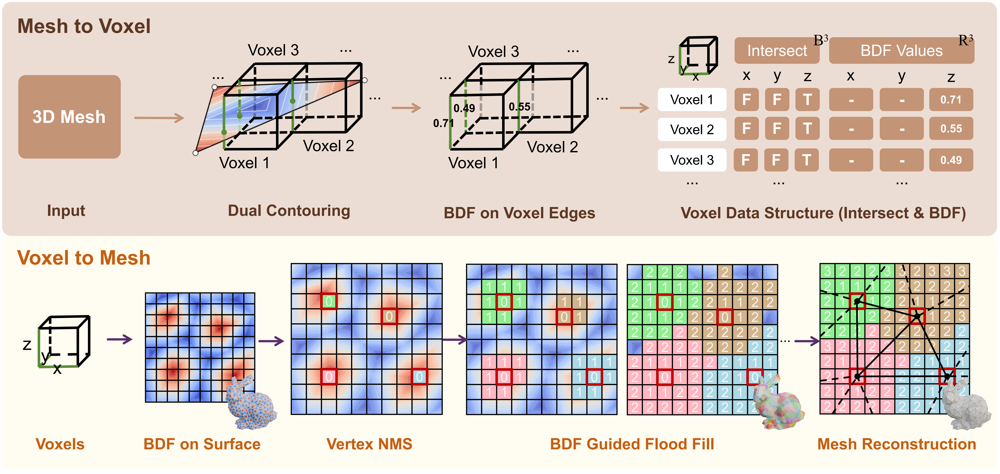
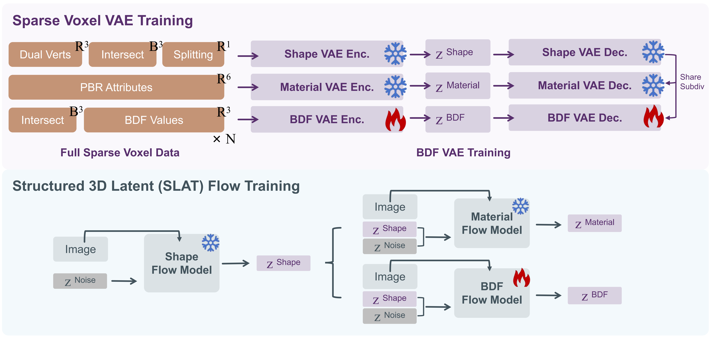

Autoregressive (AR) modeling has recently achieved remarkable progress in native 3D mesh generation, largely due to its natural ability to handle variable-length, discrete data structures. However, the inherent constraints of the AR paradigm severely restrict the generated meshes, leading to limited face counts, bounded vertex resolutions, and difficulties in supporting textures. To overcome these bottlenecks, we propose the Barycentric Dominance Field (BDF), a continuous representation defined on triangular mesh surfaces that elegantly encodes vertex topological connectivity. BDF bridges the fundamental gap between discrete mesh topology and continuous diffusion-based generative modeling by transforming connectivity into a continuous surface signal. As an intrinsic mesh property, BDF shares strong similarities with texture maps, enabling its seamless integration into existing 3D diffusion pipelines without requiring architectural modifications. Extensive experiments demonstrate that BDF empowers diffusion models to generate native meshes with significantly higher quality, greater scalability, and stronger robustness compared to state-of-the-art autoregressive methods.
Given a triangle with vertices \( V_1, V_2, V_3 \), any interior point \( p \) can be uniquely expressed by its barycentric coordinates \( (w_1, w_2, w_3) \) satisfying \( w_1 + w_2 + w_3 = 1,\; w_i \ge 0 \). We define the Barycentric Dominance Field at \( p \) as $$ B(p) = \max(w_1,\; w_2,\; w_3). $$ \( B(p) \) takes its minimum value \( 1/3 \) at the centroid and reaches \( 1 \) at the three vertices. Drag the white point inside the triangle below to see how the barycentric weights and BDF value change in real time. The right panel visualizes \( B \) as a scalar field over the entire triangle surface, where white iso-lines denote BDF contours.
We adopt a sparse-voxel + flow-based 3D generation backbone (Trellis.2) and integrate BDF as an additional surface signal (like texture) alongside geometry. The pipeline consists of two main stages: (1) BDF Encoding & Decoding represents discrete mesh connectivity as a continuous BDF stored on voxel edges, with mesh recovery via vertex Non-Maximum Suppression and BDF-guided flood fill on a Dual-Contouring grid; (2) VAE + Flow Generation processes BDF in the same way as PBR textures, enabling unified, architecture-free integration into mature 3D VAE and diffusion frameworks.


@misc{song2026meshbdfbarycentricdominance,
title={Mesh BDF: Barycentric Dominance Field for 3D Native Mesh Generation},
author={Gaochao Song and Haohan Weng and Luo Zhang and Zibo Zhao and Shenghua Gao},
year={2026},
eprint={2606.31777},
archivePrefix={arXiv},
primaryClass={cs.CV},
url={https://arxiv.org/abs/2606.31777},
}